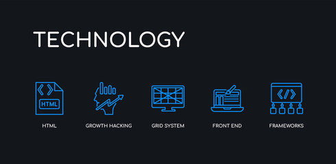

Hello There, Welcome To My Website
I'm Kipkosgei, I want to share a brief story about my journey as a web developer. The journey started because of my passion in wanting to know about technology and it's evolving nature. I was also inspired by Ra'Asis Software, especially how they dedicate there time on projects, mentorship and good coaching. Hence making learning easier. My passion for web development began with a fascination for how websites are built and evolved into a deep commitment to crafting engaging, user-friendly digital experiences. As a front-end developer, I’ve dedicated myself to mastering HTML, CSS, and JavaScript, and continuously explore frameworks like React to stay ahead in a fast-paced industry. From building my first static webpage to developing dynamic, responsive interfaces, every step of my journey has been driven by curiosity and a desire to bring creative ideas to life through code. Web development is more than a career for me, it's a craft I’m genuinely passionate about.
Dominic Kipkosgei Bor || Web Developer
My Services

Web Design
Create responsive and aesthetic layouts using HTML and CSS. Translate wireframes, mockups, or design briefs into functional web interfaces. Implement mobile-first and cross-browser designs that enhance user experience. 2. Front-End Development Use HTML to structure the content of web pages semantically and accessibly. Style components using CSS, including Flexbox, Grid, animations, and preprocessors like SASS if needed. Add interactivity and dynamic behaviors through JavaScript, handling events, DOM manipulation, API integration, and animations.
Front End Development
UI/UX Implementation Convert design mockups (from tools like Figma, Sketch, or Adobe XD) into functional web pages. Ensure consistent layout, styling, and responsiveness across devices and screen sizes. HTML/CSS/JavaScript Coding Write clean, semantic HTML for content structure. Use CSS/SCSS for styling, animations, and responsive design. Use JavaScript (and frameworks like React, Vue, or Angular) to add interactivity. 3. Performance Optimization Optimize front-end code for speed and efficiency (e.g., lazy loading, code splitting). Minimize and compress assets like images, CSS, and JavaScript files. 4. Cross-Browser and Cross-Device Compatibility Ensure the website functions properly on all modern browsers and devices. Use tools and techniques to fix bugs specific to different environments.

Web Design (React)
Responsive Design with Conditional Rendering React allows UI elements to be shown or hidden based on screen size, user actions, or data. Combined with CSS frameworks or libraries (like Tailwind or Styled Components), React helps create responsive, adaptive layouts. 5. Integration with Design Systems and Libraries Easily integrates with UI libraries (Material-UI, Ant Design, etc.) to quickly implement professional-looking designs. Also supports custom themes and styles for brand consistency. 6. Improved Developer Experience = Better Design React’s component-based structure and tooling (like hot reloading) allow for rapid design prototyping and iteration. Designers and developers can collaborate more effectively, improving design quality and speed.
Recent Projects
KiBor Website
The KiBor Website is a personal project that iam developing using HTML and CSS to showcase my front-end web design skills. The project focuses on building clean layouts, smooth navigation, and visually appealing styles. It reflects my growing ability to turn ideas into functional and responsive web pages.
Team Collaboration On Multi-page Website Development
Working as part of a collaborative web development team, I contributed to designing and building a multi-page website using HTML, CSS, and responsive layout techniques. My role involved structuring clean and accessible code, assisting with design consistency, and testing pages across devices. Through this teamwork,I learned how to coordinate tasks, communicate effectively, and combine different ideas toproduce a fully functional website.
Front-End Styling and UX Improvement in Group Projects
In this project, I worked with a team to enhance the visual design and user experience of an existing website. I focused on CSS styling, layout adjustments, color schemes, animations, and improving readability. Collaborating with other members helped me understand design feedback, version control, and the importance of aligning individual contributions with the overall project goals. This experience strengthened my creativity, attention to detail, and front-end development skills.
My Skills & Tools
Front-End Development Tools And Skills Applied
In my personal projects, I specialize in front-end web development, focusing on creating responsive, user-friendly, and visually appealing websites. I apply modern web technologies and best practices to build clean and maintainable interfaces.

Core Front-End Skills
HTML5 – Structuring web pages with semantic markup to improve accessibility and SEO. CSS3 – Styling websites using Flexbox and Grid for responsive layouts, animations, and modern UI designs. JavaScript Adding interactivity, dynamic content, and client-side logic to improve user experience.

Tools & Technoogies
VS Code – Primary code editor for writing, debugging, and managing front-end code efficiently. Git & GitHub – Version control for tracking changes, managing projects, and showcasing my work. Browser Developer Tools – Debugging layout issues, testing responsiveness, and optimizing performance. Responsive Design Tools – Ensuring websites work seamlessly across desktop, tablet, and mobile devices.
You can explore my GitHub View Repository to view a collection of projects that reflect my growth and hands-on experience as a front-end developer. Throughout my journey, I have worked extensively with HTML, CSS, and JavaScript to build responsive, user-focused interfaces and continuously improve my coding practices. These projects demonstrate my ability to translate ideas into functional web experiences, apply modern front-end principles, and learn through real-world problem solving.
Learning & Growth
Continuous learning through personal projects, online tutorials, real-world practice and Ra'Asis Softwarewho have been my pillar and guide for me through every phase. Improving code quality by following best practices, clean code principles, and reusable components. Check-out my PortfolioI am a motivated front-end developer with hands-on experience building responsive and user-focused websites using HTML, CSS, and JavaScript. My portfolio reflects my ability to develop clean, well-structured interfaces, implement interactive features, and follow modern web development best practices. Through personal and collaborative projects, I have strengthened my problem-solving skills, attention to detail, and commitment to delivering high-quality, functional web solutions.
